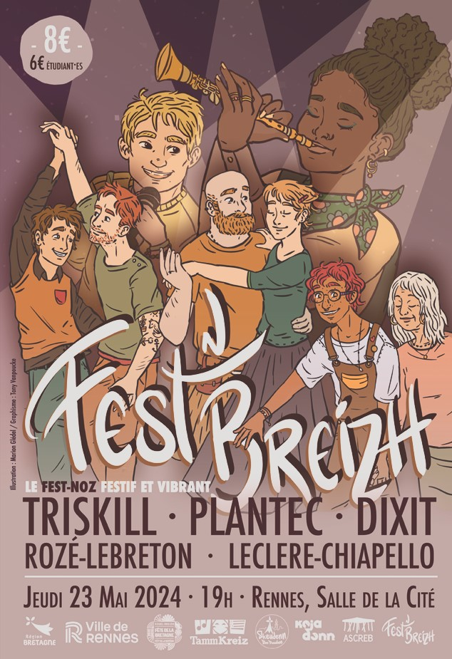
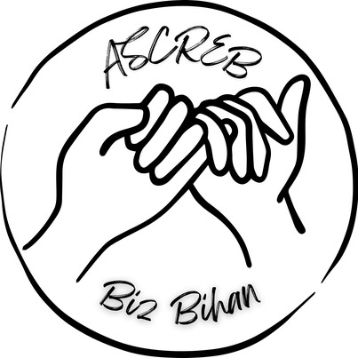

Edition 2024
Programmation
-
ASCREB (club danse bretonne) - initiation danse bretonne:
L'ASCREB est une association étudiante proposant différentes activités. Le club de danse bretonne de l'ASCREB s'occupe de l'initiation à la danse bretonne à Fest'n Breizh depuis le début. L'initiation a lieu en début de soirée.
 -
Dixit:
Né à Rennes, le trio Dixit (« a dit » en latin) se saisit de la musique traditionnelle bretonne, la fait sienne et pose un regard novateur sur ces airs et rythmes qui invitent à la danse. A partir d’un ensemble instrumental atypique, avec générosité et créativité, les trois musiciennes inventent leur propre langage musical, donnant des couleurs inédites aux répertoires à danser bretons.
-
Leclere / Chiapello:
Rencontré à Rennes en 2021, Milena et Gabriel se plaisent à jouer ensemble un répertoire varié de la Bretagne à l’Alsace en passant par le Nord. Le violon de Milena aux doubles cordes percutantes et les rythmes et progressions harmoniques chatoyantes de Gabriel et son accordéon s’enchevêtrent et invitent malicieusement à la danse
-
Rozé / Lebreton:
la guitare d'Ourawen, l'accordéon de Digresk, ou la garantie spontanée d'une bonne dose d'énergie positive, sur scène comme sur le parquet. Banjos, guitare, accordéon tissent et déploient un "bal trad de caractère".
-
Plantec:
Plantec est un groupe de musique bretonne français, de musique celtique, originaire de Bretagne. Il est formé en 2001 par deux frères, Yannick et Odran Plantec, en 2002. La musique est à la fois traditionnelle, rock et électro, puisque Plantec compose des mélodies d'inspiration traditionnelles jouées à la bombarde, auxquelles il applique un traitement utilisant des guitares et des programmations techno. Ses textes sont en breton et la plupart des mélodies se prêtent à la danse bretonne.
-
Triskill:
Triskill, c’est l’alliance inédite entre la musique bretonne à danser et la musique metal. Un style unique où violon et accordéon défient guitare, basse et batterie dans un rendu explosif, toujours au service de la danse traditionnelle. Les cinq musiciens provoquent ainsi la rencontre improbable entre Manu Kerjean et Gojira pour vous offrir leur recette Fest-noz Metal.